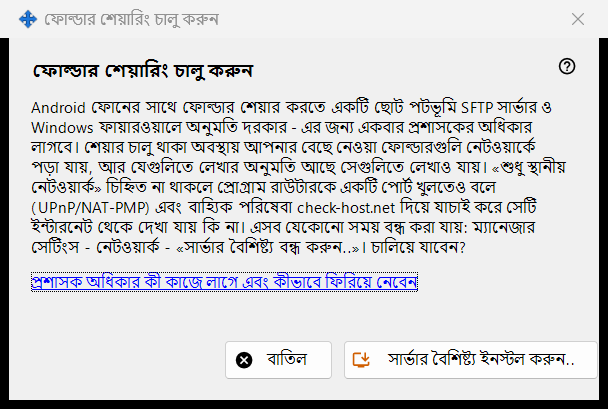
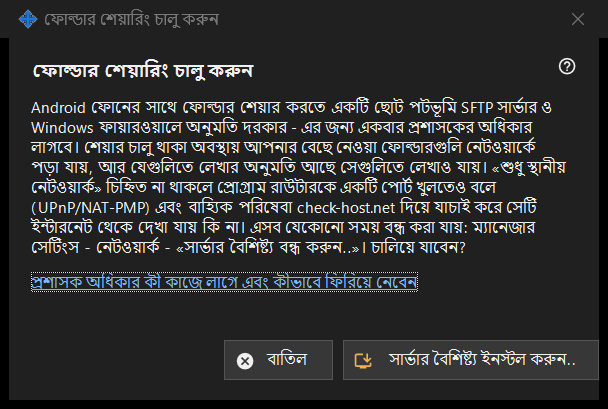

ফোল্ডার শেয়ারিং চালু করুন
এটি কীসের জন্য
শেয়ারিংয়ের সার্ভার অংশ ইনস্টল করার অনুমতি চায়: পটভূমিতে চলা একটি ছোট SFTP সার্ভার এবং Windows ফায়ারওয়ালের একটি ব্যতিক্রম। এটি মূল উইন্ডোর সার্ভার বৈশিষ্ট্য চালু করুন.. বোতাম থেকে এবং উইজার্ড থেকে খোলে, আর একবার প্রশাসকের অধিকার লাগে।


এই ক্রমে
- ব্যাখ্যা পড়ুন।
- সার্ভার বৈশিষ্ট্য ইনস্টল করুন.. বোতাম চাপুন।
- Windows-এর প্রশাসক অনুরোধ নিশ্চিত করুন।
- ফলের লাইনের জন্য অপেক্ষা করুন; সফল হলে উইন্ডো জানায় ফোল্ডার শেয়ারিং চালু হয়েছে।
- বদল না করে বেরোতে বাতিল চাপুন।
উপাদানসমূহ
এটি কী করে
Android ফোনের সঙ্গে ফোল্ডার শেয়ার করতে পটভূমিতে চলা একটি ছোট SFTP সার্ভার এবং Windows ফায়ারওয়ালের অনুমতি লাগে। শেয়ারিং চালু থাকলে বেছে নেওয়া ফোল্ডারগুলো নেটওয়ার্কে পড়া যায়, আর যেগুলো লেখার জন্য খোলা সেগুলোতে লেখাও যায়। শুধু স্থানীয় নেটওয়ার্কের বিকল্প টিক না থাকলে প্রোগ্রাম রাউটারকে একটি পোর্ট খুলতেও বলে (UPnP/NAT-PMP) এবং একটি বাইরের সেবার মাধ্যমে ঠিকানা যাচাই করে।
ফল
সম্পন্ন। ফোল্ডার শেয়ারিং চালু হয়েছে।; অনুরোধ প্রত্যাখ্যান করলে শেয়ারিং চালু হয়নি - প্রশাসক অধিকার দেওয়া হয়নি। (কিছুই বদলায় না এবং আপনি আবার চেষ্টা করতে পারেন); অথবা ফায়ারওয়ালের ব্যর্থতা, যাতে আবার চেষ্টা করতে এবং লগ পাঠাতে বলা হয়: ম্যানেজার সেটিংস - সহায়তা - «বিশ্লেষণের জন্য লগ রপ্তানি»।
প্রশাসক অধিকার এবং সেটি ফিরিয়ে নেওয়া
লিংকটি ব্যাখ্যা করে অধিকারটি কীসের জন্য ব্যবহৃত হয়। ফিরিয়ে নিতে ম্যানেজারের সেটিংসে সার্ভার বৈশিষ্ট্য বন্ধ করুন.. ব্যবহার করুন: শেয়ারিং থামে, সংযুক্ত ফোনগুলো বিচ্ছিন্ন হয় এবং ফায়ারওয়ালের অনুমতি সরানো হয়। ফোল্ডারের তালিকা ও পাসওয়ার্ড থেকে যায়, আর সবকিছু আবার চালু করা যায়।
ম্যানেজার সেটিংস · SFTP শেয়ারিং সেটিংস · এক্সচেঞ্জ সার্ভার সেটিংস